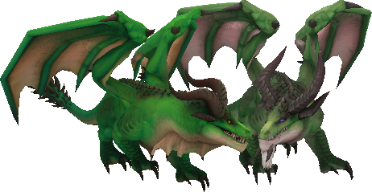

The Lore we Follow
A world’s lore can be an amazing yet also fickle thing; especially the lore behind the Warcraft universe; but we as players have tried to stick to it as best we can. Though this does sometimes means working around limitations the games themselves puts on, such as language between factions. But that is why we find it best to not stick to a single source when trying to follow along with a world’s Lore. Outside the Games and the quests they provide, we also take the information gathered from the Comics/Mangas, the written Novels, along with the Chronicles books, and the Ultimate Visual Guide books.
The Warcraft RPG these days is regarded as non-canon as it was written in days of old before things started to become more fine-tuned (if you can call some of the choices made that). However, there is still a lot of information in current day Warcraft that is left a void that the RPG does cover, and still appears to hold some ground with the evidence we see in-game. There are also a lot of things and events that took place in the RPG that we do see as recently as BFA. So although it is listed as 'non-canon', we will use it to fill in any gaps we come across in the Lore of the world.
We would like to stress also, that as players we do fully understand that the Warcraft World is not anything like real life or earth. Though it does have 'Humans' as once of the races, it's a fully Fictional Fantasy World whose Laws, Religions, Cultures, and General Concepts can be vastly different from our own in Real-Life. Outside Humans, it also hosts a large variety of Intelligent Fantasy Species, like Orcs, Elves, Goblins, Dragons, and so on who all have their own cultures, faiths, views, and ideas about the world. They also have different life spans and rates of aging that don't always follow our real-life logic. They are not just 're-skinned humans'.
The Warcraft Timeline

One thing we all enjoyed with the Warcraft world is it has a very well established History and Timeline of events reaching well before the first books or games. This sets a nice solid foundation for our own stories and ventures we can draw on, allowing us to insert our own characters in during these events, and allowing references to be made rather in the past before the games, or current going ons.
Culture, Traditions & Social Expectations
Culture affects more than clothing and architecture. It can shape what a society considers honorable, how families are formed, how individuals relate to their communities, and what conduct is praised or condemned. That does not mean every member of a species shares the same values, or that a fictional custom is beyond criticism. It means those customs should be understood in context.
Example: Dragons: Consorts, Mates & Kinship

Warcraft lore establishes that the Dragon Aspects have historically maintained multiple consorts, with one holding the position of Prime Consort. These are companions, partners, and lovers whose relationships may also carry duties, loyalties, and responsibilities within draconic society.
Our group builds on this precedent in its portrayal of dragon culture. Dragons may have several mutually acknowledged mates, and a relationship involving more than two partners is not automatically an act of infidelity or betrayal. Expectations depend on the understandings and commitments of the characters involved.
Our interpretation also recognizes that dragons may use terms such as brother or sister as expressions of shared kind or community, not necessarily of blood relation. Such language by itself does not make an unrelated pair biological siblings. Neither multiple acknowledged mates nor nonliteral kinship terms automatically imply incest.
Not every dragon follows the same traditions, and not every relationship is identical. We portray the cultures and agreements of the particular characters involved rather than imposing a single human model upon every dragon.
Example: Orcs, Trolls & Cultural Differences
These distinctions extend far beyond romantic relationships. Orcish traditions have often placed enormous importance on strength, contribution, and the survival of the clan. Within some orc societies, weakness has been viewed as a serious liability, with exile among its harshest consequences. (The weakness of one contaminates the strength of all}, Other clans and leaders; notably the Frostwolves and Thrall; have shown different measures of compassion. Orc culture is not a single unchanging rule, but those tensions are part of its history.
Similarly, cannibalism has been practiced by a number of troll tribes, while voodoo and related spiritual practices have long held important roles in troll traditions. These practices differ between tribes: for instance, the Darkspear officially abandoned cannibalism after joining the Horde. What one society treats as customary may be rejected by another, including others of the same species.
Including such customs in a fictional story is not the same as endorsing them in real life. Nor must every character approve of their own society's traditions. Disagreement, reform, loyalty, and rebellion can be just as important to a story as the customs themselves.
These differences create relationships, conflicts, and choices that would disappear if every race were reduced to the same set of modern human expectations. We want the peoples of our world to feel different because those differences help make the world alive.